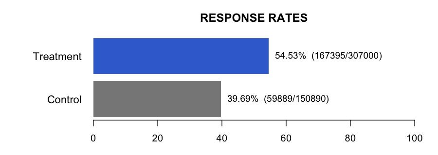

The treatment group included 2,300 patients, of whom 1,225 responded (53.26%; 95% CI 51.20%–55.32%). The control group included 45,600 patients, of whom 34,500 responded (75.66%; 95% CI 75.26%–76.05%). The null hypothesis was that the two groups have equal response probabilities; the alternative was that they differ. Because every expected cell count exceeded 5 (minimum 584.60), a chi-square test was appropriate, assuming independent groups and a binary outcome. The result was X² = 579.3856 (df = 1), p < 0.001 (***), so we reject the null hypothesis. Receiving treatment or not is associated with the response.
| Group | Response | No response |
|---|---|---|
| Treatment | 1225 | 1075 |
| Control | 34500 | 11100 |

| Metric | Treatment | Control |
|---|---|---|
| Total | 2,300 | 45,600 |
| Response rate | 53.26% (95% CI 51.20%–55.32%) | 75.66% (95% CI 75.26%–76.05%) |
| Risk difference | Absolute difference: 22.40 percentage points | Treatment minus control: −22.40 points (95% CI −24.48 to −20.33) |
The response-rate intervals use the Clopper–Pearson method, while the difference interval uses the Newcombe method.
Test: Chi-square | Statistic: X² = 579.3856 (df = 1) | p-value < 0.001 (***) | alpha = 0.05
The observed response rate was about 22.4 percentage points lower in the treatment group than in the control group. The p-value—the probability of observing a difference this large or larger by chance alone if there were truly no effect—is below 0.001, providing very strong evidence that the groups differ. We are 95% confident that the true treatment-minus-control difference lies between −24.48 and −20.33 percentage points. This establishes an association in these data, but causal interpretation requires appropriate randomization and freedom from major bias or confounding; statistical significance also does not by itself establish clinical importance.